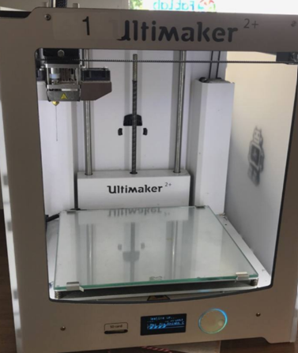
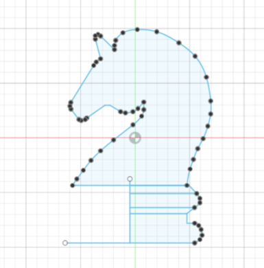

3D Printing
3D printing is the process of turning a three-dimensional digital model into a physical object by placing layers of thin materials. 3D printing is also known as addictive manufacturing. 3D printing saves time and is capable of turning anything from a digital model to a physical object.
Knight Chess Model
Firstly, I started looking up for knight chess images on the internet

With the suitable image of the chess piece, I imported the image into the software, Autodesk Fusion 360 through canvas. Then I edited the size accordingly.
Then, I traced the 2D image of the chess piece to get the outline of the model. As shown in the image below, I outlined the full area of the knight chess piece. We were taught by Mr Chew to only outlined one side of the chess piece for the lower bottom part of the model as we will be using the revolve tool which will only need one side of the sketch line as shown in the image below.
After that, I extruded the upper part of the chess piece and revolve the lower part of the chess piece. The image shown below is the end product of the knight chess piece model in Fusion 360

Then, I saved the file in Stereolithography format (.stl). I opened the file in another software, Ultimaker Cura to view the model in the digital printing machine. I did some adjustments such as the sizing and infill. I also added support which is used to support parts of the model. Lastly, I sliced the model and save it as G-code file in a SD card.
Selection of profiles, infill and support before slicing.

Printing of knight chess in progress

Final Product
The image below shows the end product of the knigh chess model. The support was removed and some filing wprk was done to keep the surface smooth and clean.

Troughout the Knight Chess assignment, it was a fun and interesting process. I have learnt and gained a lot of knowledge, especially the usage of Autodesk Fusion 360, as it is my first time using the software.